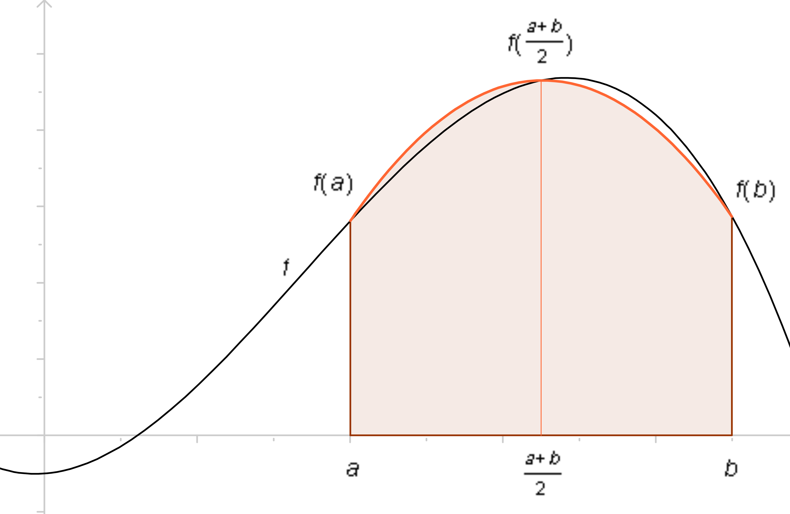
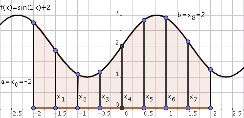
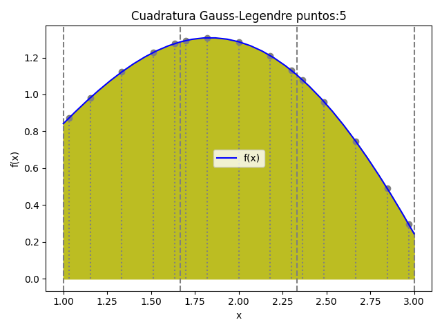
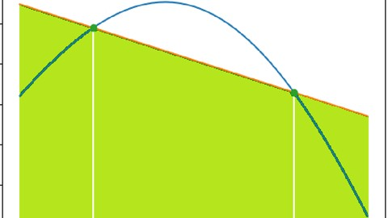

Integracion Numerica

| Aspecto | Descripcion | Formula |
|---|---|---|
| Definicion | Aproxima el area bajo la curva usando trapecios | ∫[a,b] f(x)dx ≈ (h/2)[f(x₀) + 2Σf(xᵢ) + f(xₙ)] |
| Paso h | Distancia entre puntos equidistantes | h = (b - a)/n |
| Error | Error de truncamiento proporcional a h² | E = -(b-a)h²f''(ξ)/12 |
| Aplicacion | Funciones suaves, intervalos pequeños | n subintervalos |
Procedimiento:
• Definir los limites de integracion a y b
• Determinar el numero de subintervalos n
• Calcular h = (b - a)/n
• Evaluar la funcion en cada punto xᵢ
• Aplicar la formula del trapecio
• Estimar el error si es necesario

| Variante | Descripcion | Formula |
|---|---|---|
| Simpson 1/3 | Usa parabolas, requiere n par | ∫f(x)dx ≈ (h/3)[f(x₀) + 4Σf(xᵢmpares) + 2Σf(xᵢpares) + f(xₙ)] |
| Simpson 3/8 | Usa cubicas, requiere n multiplo de 3 | ∫f(x)dx ≈ (3h/8)[f(x₀) + 3Σf(x₁,x₂) + 2Σf(x₃) + f(xₙ)] |
| Error 1/3 | Error proporcional a h⁴ | E = -(b-a)h⁴f⁽⁴⁾(ξ)/180 |
| Ventaja | Mayor precision que el trapecio | Convergencia mas rapida |

Procedimiento Simpson 1/3:
• Verificar que n sea par
• Calcular h = (b - a)/n
• Evaluar f(x) en todos los puntos
• Aplicar coeficientes: 1, 4, 2, 4, 2, ..., 4, 1
• Multiplicar por h/3
• La precision es mayor que el trapecio

| Formula | Grado del polinomio | Puntos | Error |
|---|---|---|---|
| Trapecio | 1 (lineal) | 2 | O(h²) |
| Simpson 1/3 | 2 (cuadratico) | 3 | O(h⁴) |
| Simpson 3/8 | 3 (cubico) | 4 | O(h⁴) |
| Boole | 4 (cuartico) | 5 | O(h⁶) |
| General | n | n+1 | Depende de la paridad |

Caracteristicas generales:
• Basadas en interpolacion polinomica de Lagrange
• Los puntos son equidistantes
• A mayor grado del polinomio, mayor precision
• Pueden presentar oscilaciones (fenomeno de Runge)
• Para n alto es preferible usar cuadratura gaussiana

| Aspecto | Descripcion | Detalle |
|---|---|---|
| Fundamento | Polinomios ortogonales de Legendre | Puntos raices de Legendre |
| Intervalo | Se transforma [-1, 1] a [a, b] | x = [(b-a)t + (a+b)]/2 |
| Formula | Suma ponderada de evaluaciones | ∫f(x)dx ≈ Σ wᵢf(xᵢ) |
| Ventaja | Exacta para polinomios hasta grado 2n-1 | Mayor precision con menos puntos |
| Aplicacion | Integrales complejas, alta precision | MATLAB, Python (NumPy, SciPy) |

Procedimiento:
• Transformar el intervalo [a,b] a [-1,1]
• Seleccionar el numero de puntos n
• Obtener los nodos xᵢ y pesos wᵢ de las tablas de Gauss-Legendre
• Evaluar la funcion en los nodos transformados
• Calcular la suma ponderada Σ wᵢf(xᵢ)
• Aplicar el factor de escala (b-a)/2